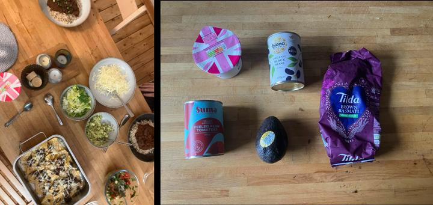

Follow That Thing!
15th October 2026. From a train at 3pm to Leuchars.

Last week I was helping a brilliant colleague Peter Foreman on a grant they were writing. He’s a geographer. Not a subject I thought I would be supporting on a grant - my C at O’Level geography curtailed that path aged 16… but 40 years later (or so), here I am. And wow. If 16 year old Jon knew geography could be as radical and punk as this, he might just might havce considered a path to continue. In the grant was the methodology. A methodology called Follow That Thing. It does what it says on the tin. As a research approach, you start by researching one thing and then allow it to lead the research as it developes. Why haven’t I head of this before? We love mapping in design. STBY’s work on mapping as a way of understanding the people, the systems and the services that interact. It’s what Vladan Joler and Kate Crawford did when they unravelled the anatomy of an AI system. It’s what they did when they decided to keep going and map the entire history of social technological invention, power and control in Calculating Empires.
Follow That Thing was articulated as an approach by the cultural geographer Dr Ian Cook through their paper Follow That Thing: Papaya. It’s a beautiful paper. Perhaps one of my favourite. The language pops and fizzes with detail and enthusiasm. It’s how academic writing could and should be (a theme i’ll come back to). I tested out the idea with students this week in Jon’s Rubbish Lecture - where I asked them to follow the thing or last night’s dinner - taking for a walk the packaging from a simple mexican black beans and rice recipe favourite. For Product Designers this is important. We are so used to doing “exploded” diagrams of things. But the edges of the diagram stop at the edges of the product. Useless if you’re designing a cloud based voice assistant, where the “inside” is in a far off remote cloud. Far beyond the jurisdiction of the government where the physical thing resides. It’s also far bigger on the inside (you can read about my thoughts on voice assistantsd here), like Doctor Who’s TARDIS. Follow The Thing gives a framework for revisting the full extent of a product. It’s materials. The regulation surrounding it. The data services if it’s connected. As Vladan said “if you follow the datastream and you end up at a data centre”1. He also says he is surprised that there seem to be so few maps made like this. Perhaps just perhaps, that by mapping we expose the power and by knowing where the power lies, we can find space outside of that. To make maps of our own. To find that third, unoccupied, space for and with our communities. Now there’s a thing to follow…